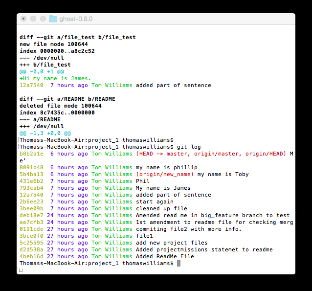

Editing the .gitconfig file for a more readable git log by adding the following settings.
[log]
date = relative
[format]
pretty = format:%C(yellow)%h %Cblue%>(12)%ad %Cgreen%<(7)%aN%Cred%d %Creset%s
These settings ensure for ease of reading log lines that they are colour coded with dates right aligned and committer names left aligned.
%ad is the author date, which can be over ridden by --date or the option specified in the [log] stanza within .gitconfig.
[format] section ensures this is default for git log. Below is the before and after.
